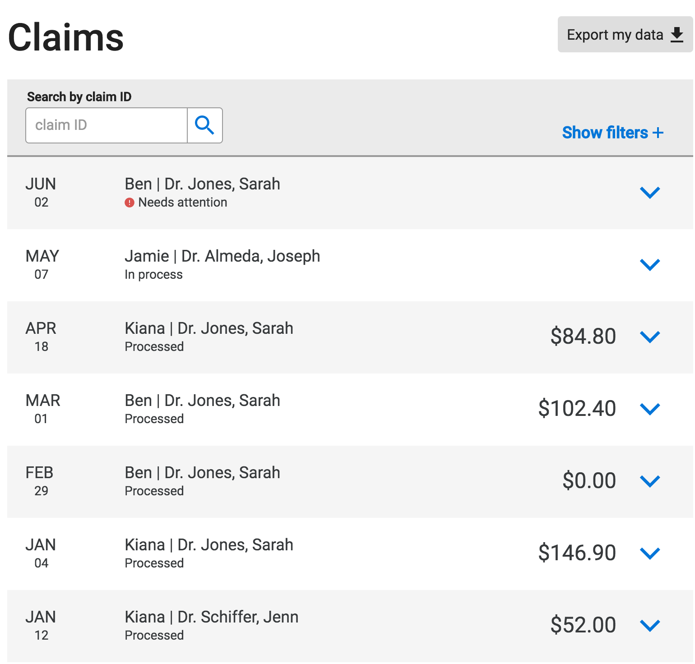
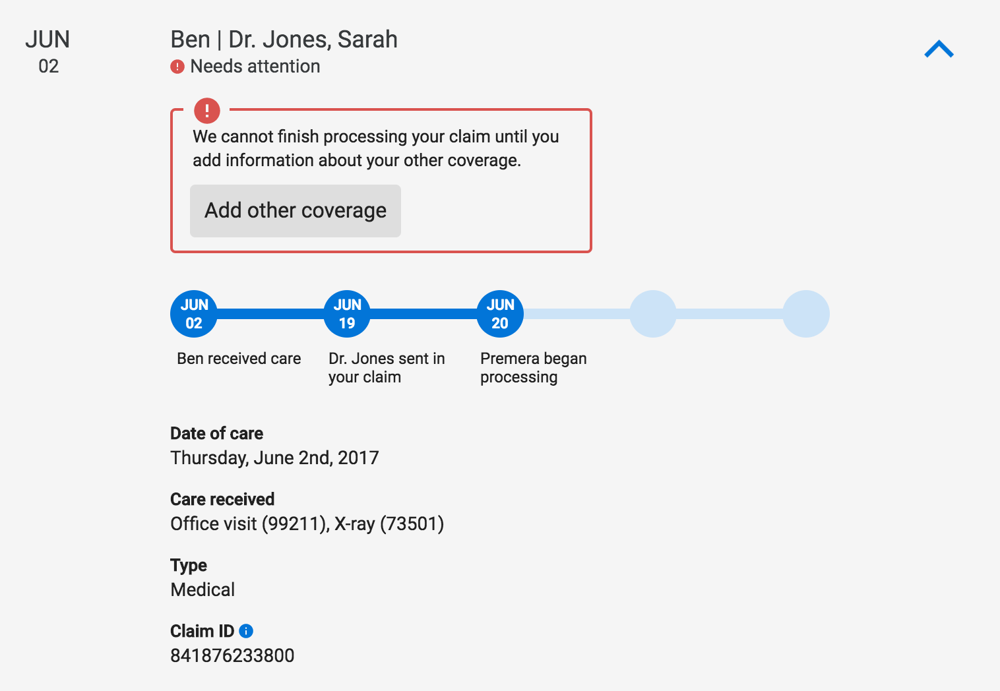
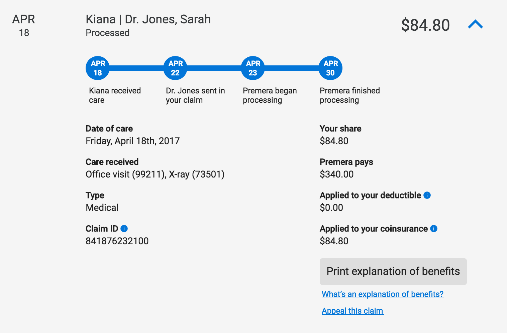

Claim Table Design
Project Summary
This project is currently in progress.
When you visit the doctor, your health insurance will determine how much to pay to your provider, and how much you are responsible for, this information is detailed within your claims.
I am leading the redesign of how members view, search for, and interact with their claims. My process started with analyzing call data related to claims, and I am currently iterating on interactive prototypes using framer.js
Current iteration, still in progress.
Problem Space
Health insurance is a complicated system, and many have trouble tracking and understanding how much they need to pay for each visit to a doctor.
How can I provide a design that gives Premera members an easy way to access claims, and help them understand the process.
Process
Analyzing call data
I started by analyzing our call data over a 2-month period to understand the biggest pain points related to claims. I focused my analysis on issues related to our website, and I identified a few major problems.
- We provide a list of recent claims on our dashboard, but many members think this is all their claims, and call in when they don't see certain claims in the list.
- Our claim search page does not save their searches making it a very painful process to access more than one claim in a visit to our website.
- We provide no transparency about the claim process or where in the process their claim is, resulting many members calling in to find out why their claim is still in process.
- Before our claims are processed, we display all amounts as $0.00, causing a lot of confusion.
Iteration v1
I am changing our paradigm, moving away from only displaying recent claims on the dashboard, and instead displaying as many claims as possible, allowing members to filter, take action on claims when needed, and dive as deep as they desire into their claim. Hiding any dollar amounts until the claim has fully processed. I am also building out a tracker to clearly communicate our process and keep our members updated.
Current iteration, showing when the member needs to take an action.
Current iteration, showing when a claim has finished processing.
To explore the design and micro-interactions please visit the interactive framer.js version
Results
This project is still in progress, I will update this section when I have finished.
Date
Early 2017
Links
Tasks
- User Research
- Ideation
- Prototyping
- Usability Studies
- Implementation